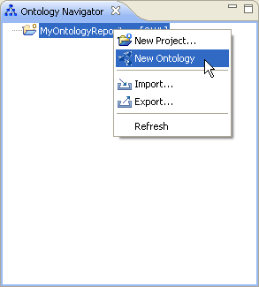
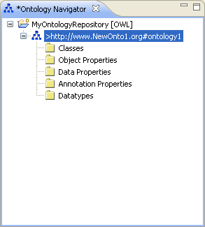

Create an Ontology
To create an OWL ontology, proceed as follows:
- Select an ontology project.
- Create an ontology.
Right-click the ontology project and select New Ontology.

- Enter appropriate information.
In the New Ontology dialog, enter the following information:
- Module Identifier. The module identifier is used for denotation and the unique identification of modules. Modules
divide the knowledge base in smaller units to ensure that the units don't influence each other unintended.
- Default Namespace. The default namespace is used to bind unprefixed qualified names to the current ontology.
- Project. The project to which the ontology will be added.
- Click Finish.
The ontology will be created. To discard your changes, click Cancel.
